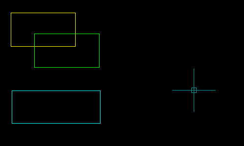
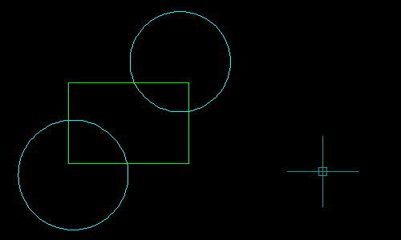

Area Label
This page is delivered for consistency purposes only, as part of the LeeMac sample module of DynALisp, which shows how DynALisp turns existing AutoLISP programs into a module. The program and its description are the work of Lee Mac, who keeps all the credit for them. The original page, with the latest version, is on Lee Mac's website: https://lee-mac.com/arealabel.html
| Function Syntax | LM-AreaLabel – original syntax: AT (Table) / AF (File) (see aliases) |
| Current Version | 1.9 |
| Compatible with AutoCAD for Mac? | No |
| Compatible with AutoCAD LT? | No |
| Original Page | lee-mac.com/arealabel.html |
Program Description
This program enables the user to annotate picked areas or selected objects with custom labels and either display the labels and associated areas in an AutoCAD Table Object, or write the data to file.
The program offers two modes of operation: Area to Table (AT) or Area to File (AF), depending upon the output desired by the user.
Area to Table
Upon calling the program with 'AT' at the AutoCAD command-line, the user is prompted to specify a starting number at which to begin labelling the selected areas. Following this, the user may either pick a point to create a new AutoCAD Table, or opt to select an existing table to which new data is to be appended.
Area selection may be accomplished in two ways: by picking bounded regions, or by selecting closed objects. Following the selection of an area, a label is placed in the centre of the selected area and a new row is added to the AutoCAD Table, displaying both the label and measurement of the selected area.
If an incorrect area is selected, the user can type 'Undo' to undo previous selections without exiting the program or needing to start over.
Furthermore, if desired, the program can use Fields to link the area labels and selected objects to ensure the table data will automatically update should a change be made.
Preview

Area to File
If the program is called with 'AF' at the AutoCAD command-line, the user is once again prompted to specify a starting number at which to begin labelling the selected areas; however, following this prompt, the user is prompted to create an output file to which the labels and associated area measurement data will be written. The file may be of Text, CSV or Excel format.
Upon exiting the area selection process, the output file is automatically opened so that the user may inspect the results.
Additional Features
An adjustment menu is included at the top of the program code to enable the user to make custom refinements to various elements of the program.
This menu allows the user to customise the table & file headings and titles and furthermore add optional prefixes and/or suffixes to the area labels (as demonstrated in the animation above) and area measurement data.
An arbitrary conversion factor may also be applied to the area measurement to enable conversion between square millimetres and square metres, for example.
Additionally, the option of whether to use Fields to link area and labels to those displayed in the Table may also be set, and formatting applied to the area Field for selected objects may be changed.
Preview

Bundled program notes
;;---------------------=={ Area Label }==---------------------;;
;; ;;
;; Allows the user to label picked areas or objects and ;;
;; either display the area in an ACAD Table (if available), ;;
;; optionally using fields to link area numbers and objects; ;;
;; or write it to file. ;;
;;------------------------------------------------------------;;
;; Author: Lee Mac, Copyright © 2011 - www.lee-mac.com ;;
;;------------------------------------------------------------;;
;; Version 1.9 - 29-10-2011 ;;
;;------------------------------------------------------------;;
Command Names And Aliases
As in every DynALisp module, each program of this sample module has one main command, named LM-*, and the original command names of Lee Mac's page are kept as its aliases: they run the same command, and can be added, renamed or removed in Dyl-Suite (saved in Resources\Aliases.csv). The rows marked ↳ are child commands of LM-AreaLabel: they are run by their alias, or picked from LM-AreaLabel when it lists them (their command is named Pst-*).
| Command | Aliases | Name |
|---|---|---|
| LM-AreaLabel | – | Area Label |
| ↳ (no alias) | – | Area Label To Table |
| ↳ (no alias) | – | Area Label To File |